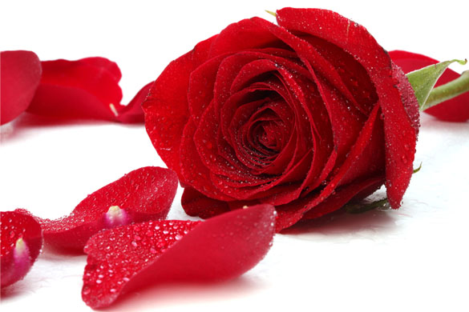

Roseflowers have been the best flowers ever since 1980's. They are so attractive and they have the best smell.They are mainly bought in flower shops in wholesales. They are bought for 1000 kenya shillings. Roseflowers have the best brand every year. Mostly the are found in green houses where they are well irrigated. 